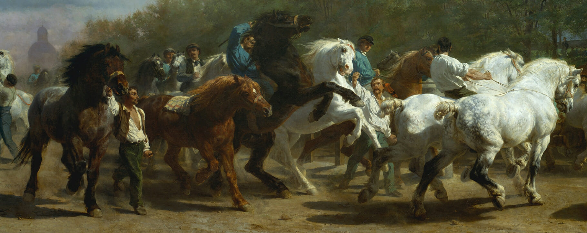
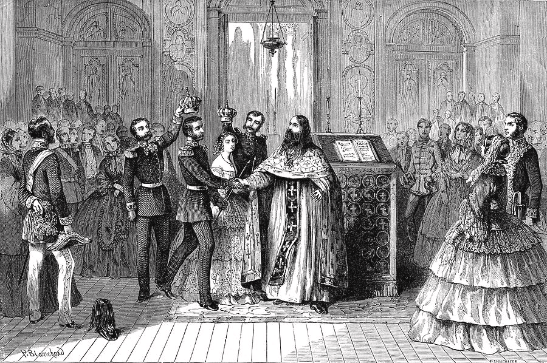

Modal Mixing

In Tolstoy’s Anna Karenina, modal mixing is the “juxtaposition of incompatible dramatic modes” within a single scene. Rather than allowing a scene to remain purely tragic, comedic, satirical, or melodramatic, Tolstoy allows these genres to overlap. This mixing changes how the reader interprets the novel’s events. A source of public amusement may become the setting of a character’s self-destruction, and a sacred wedding may experience comedy and gossip. In several cases, this modal mixing occurs in scenes featuring a performance viewed by an audience. Public events such as the horse race and Kitty and Levin’s wedding allow Tolstoy to reveal a gap between society’s interpretation of events and the meaning those events hold for the characters themselves. As a result, the reader must follow the scene’s fluctuating emotional tones.
The horse race in Part 2 is one of the clearest examples of this narrative device. On the surface, these scenes depict an aristocratic sport –– a public spectacle. Vronsky engages in this sport, and he knows he is being watched. Tolstoy writes, “Vronsky could feel those eyes fastened upon him from all sides, but he saw nothing except the ears and neck of his horse, the ground racing to meet him, and Gladiator’s croup and white legs beating time rapidly in front of him” (Tolstoy 201). The scene possesses a satirical quality not because it is inherently amusing, but because Vronsky’s individuality is temporarily subsumed by the role he is playing. Most of the crowd views him as the rider and the competitor. Meanwhile, for Anna, he is still primarily her lover. Tolstoy, therefore, uses the race as an opportunity to satirize society’s fixation on performance. For some characters, the race is emotional, but the rest of the audience views it as mere entertainment. Vronsky’s sense of dignity hinges on appearing skilled and masterful, but the race does not allow this. While the race began as an ordinary, organized competition, it devolved into a humiliating loss of control for both Vronsky and Anna. The satirical structure becomes suddenly tragic when Vronsky falls and breaks his horse’s back. After the accident, Vronsky “felt desolate. For the first time in his life, he was experiencing the bitterest of misfortunes… which he himself had caused” (Tolstoy 203). Thus, the scene shifts to tragedy. Vronsky’s suffering is caused by his own pride and by the same discipline that makes him so alluring and impressive. The reader perceives the symbolic significance of this accident more fully than Vronsky does; the destruction of his horse foreshadows the destructive course his relationship with Anna will take. This public sporting event, therefore, carries tragic meaning. Anna’s reaction adds a melodramatic layer to this scene. Watching Vronsky from the audience, “her face was pale and rigid. She clearly only had eyes for one person and could see nothing else” (Tolstoy 213). When he falls, she “completely [loses] her composure,” and her repeated refusal of Karenin’s arm turns her hidden passion into a theatrical display. However, Tolstoy complicates Anna’s melodrama, as he refuses to depict Anna as merely innocent or Karenin as merely oppressive. Anna is evidently suffering, but her visible fixation on Vronsky also publicly humiliates her husband. Karenin’s distress is therefore not only concern for his reputation. Rather, he is forced to confront his rejection by society, a situation “too awful and too unnatural to contemplate” (Tolstoy 205). The race, therefore, mixes satire, tragedy, and melodrama. As high society attends an amusing sporting event, the reader sees a catastrophe. Levin and Kitty’s wedding offers a different kind of modal mixing. A wedding would conventionally invite a sacred, romantic tone, but Tolstoy adds satire and comedy to the event. On the night before the ceremony, Levin torments Kitty with his insecurities, pleading, “You couldn’t have agreed to marry me. Think about it. You made a mistake. Think hard. You cannot love me” (Tolstoy 447). This emotional appeal is melodramatic because Levin’s inner fears unfold into a scene of anguish, though the couple ultimately reconciles. Then, this scene soon shifts into comic disorder. When Levin finally gets his clean shirt and sprints out the door to his wedding, Stiva follows him, smiling and “unhurried,” reassuring him, “it will shape up, it will shape up” (Tolstoy 451). At the ceremony itself, Stiva approaches Levin with “mock alarm” about whether he wants new or used candles for a difference of ten roubles, telling Levin he is “exactly in the right state of mind now to appreciate [the question’s] full importance” (Tolstoy 452). These scenes are comic because Tolstoy briefly reduces Levin from a spiritually overwhelmed lover into the comic role of the late, disorganized groom. His inner crisis is externalized as a series of absurd practical obstacles, and Stiva’s calmness and jokes make Levin’s spiritual panic look like an ordinary aspect of wedding-day chaos. Despite this comedy, the wedding is still serious. Kitty “could not conceive of or wish for anything beyond life with this man,” and, by the end, Levin feels that “they were already one” (Tolstoy, 455 & 461). The sacredness returns, but it now includes the awkwardness previously described. Even the strangers at the ceremony add another layer to the scene by gossiping about whether the marriage is financially motivated. Thus, the wedding is not only holy but also comedic and public. Both the race and the wedding are private, emotional scenes that take place before an audience. Vronsky’s accident and Anna’s panic are displayed in front of high society, and both family and strangers watch Levin and Kitty’s wedding. In both scenes, Tolstoy utilizes modal mixing to demonstrate that private emotional experiences in Anna Karenina are often performed and spectated.